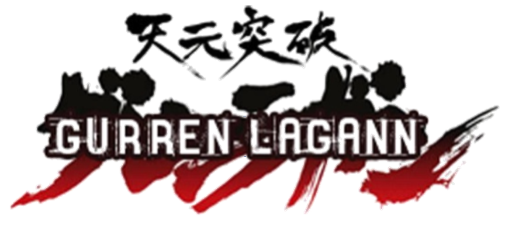
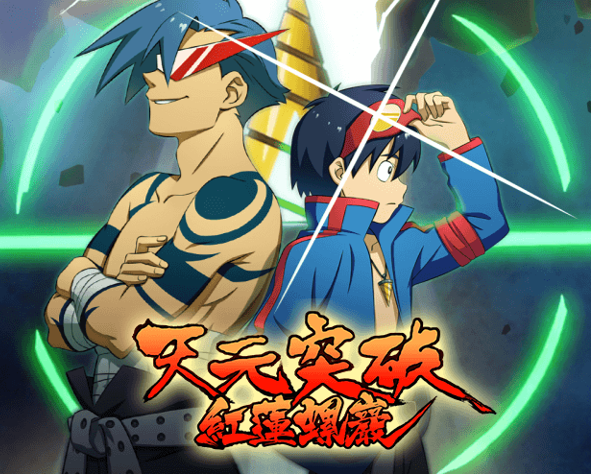

O anime conta a história dos amigos Simon e Kamina. Simon é um escavador de túneis que vive numa comunidade subterrânea. Os antigos líderes da comunidade contam histórias de ”coisas terríveis“ que existem na superfície e punem severamente aqueles que desafiam essa filosofia. Um dos principais ”rebeldes“ é justamente Kamina, que vive a tentar das mais variadas formas de chegar até a superfície a fim de conhecê-la. Durante uma escavação, Simon encontra uma estranha mini-broca que brilha sozinha e ele nem imagina para que ela serve.
X